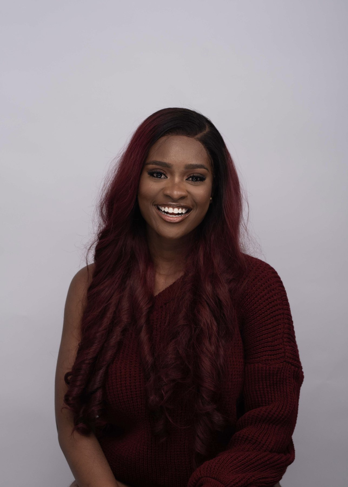
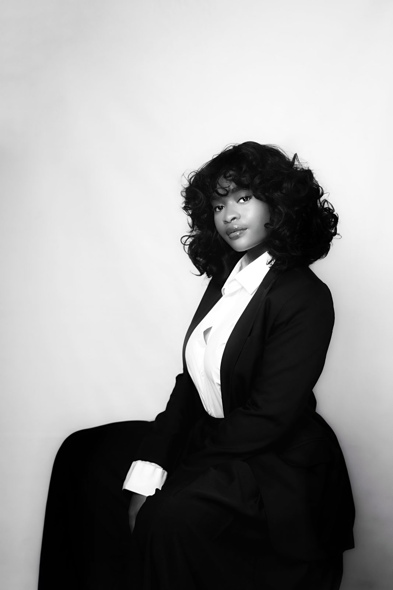

Operations · FONO · Writing
Hi, I'm Favour.
Most of my week goes to my 9-to-5 in operations. I also run FONO, a small advisory firm, and in the time that's left, I write.

I take ideas, businesses, teams and messy situations, and make them work better.
What I do
Three things take up most of my time.
Operations
By day, I'm Operations Lead at Mighty, a company that moves money across borders for businesses. My job is the running of things: making sure money moves when it should, clients are set up properly, and the team knows what matters this week.
Find me on LinkedInFONO
FONO Consulting is an advisory firm focused on helping business owners run their businesses with clarity, structure and purpose. I started it for founders whose business has outgrown the way it's being run.
Talk to FONOWriting
I read a lot and think slowly. Writing is how I work out what I believe about people, work, love and faith, and I share it with readers on Substack, Medium and X.
Read my writingRecent writing
Things I've been thinking about.
- Jun 2026
What Do You Have In Your Hands?
On starting with what you already have, instead of waiting for what you don't.Medium - Jan 2026
Have Hobbies That Do Not Scale.
A case for small joys you never measure, sell or post.Medium - Nov 2025
Slow Death.
How we lose ourselves a little at a time, and how we come back.Medium - Oct 2025
You Want More Than I Can Give.
On friendship, limits, and giving your whole self to a few people.Medium

A little more about me
I never planned to work in operations.
I studied microbiology, then went back for a master's in Business and Management. A mix of chance and curiosity took me into operations, and I found I liked the part most people find boring: getting things to run properly.
Outside work, I'm a woman of faith and I serve in Children's Church. I treasure my friends, love a good story, travel when I can, and watch more movies than I should. I'm based in Abuja.
Get in touch
Say hello.
Whether it's about FONO, something I wrote, or you'd simply like to talk, email is the best way to reach me.
thefavourogazi@gmail.com